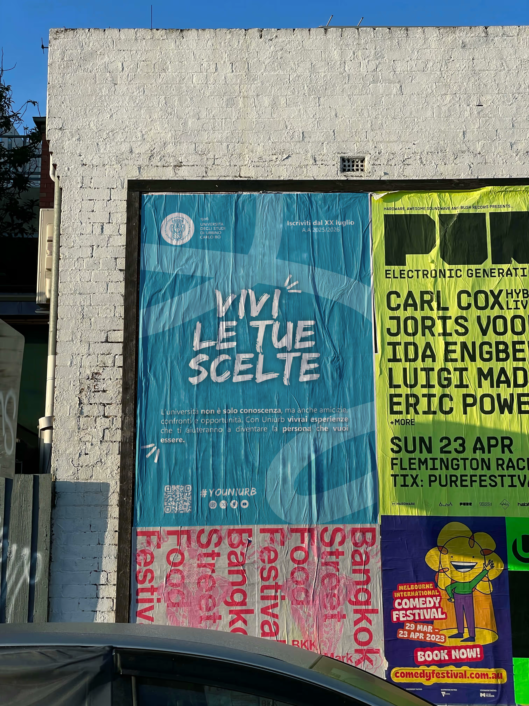
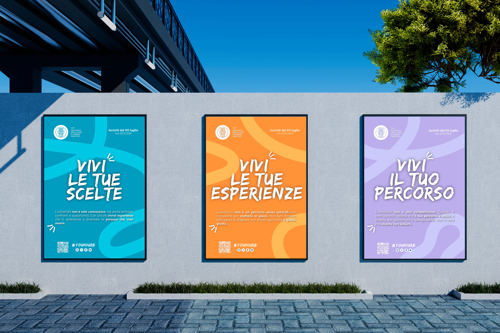

Contesto
La scelta universitaria viene spesso vissuta come una decisione definitiva, accompagnata da pressioni, aspettative e incertezza verso il futuro.
communication campaign · Enrollment campaign · 2025
Una campagna di immatricolazione per raccontare l’università come spazio di crescita, autenticità e comunità.

01 · Overview
Youniurb è una campagna di comunicazione per l’Università di Urbino, nata con l’obiettivo di parlare alla Generazione Z attraverso una visione dell’università che vada oltre formazione, competizione e futuro professionale.
La scelta universitaria viene spesso vissuta come una decisione definitiva, accompagnata da pressioni, aspettative e incertezza verso il futuro.
Posizionare l’Università di Urbino come uno spazio di sviluppo autentico e comunitario, rafforzandone l’identità e la capacità di attrarre la Generazione Z.
Valorizzare comunità, presente e crescita personale senza ignorare le preoccupazioni degli studenti legate alla realizzazione e al futuro professionale.
02 · Research
La ricerca ha combinato analisi dei competitor, dati quantitativi e testimonianze dirette per comprendere aspettative, paure e priorità degli studenti rispetto all’esperienza universitaria.
Analisi delle campagne di comunicazione di università e competitor per confrontare strategie, contenuti e modalità con cui viene raccontata l’esperienza accademica.
Un questionario strutturato diretto agli studenti delle superiori ha permesso di raccogliere dati quantitativi sui fattori che influenzano le scelte formative e personali degli studenti.
Le testimonianze di studenti universitari e delle superiori hanno fatto emergere bisogni, ansie e tensioni legate al contesto accademico contemporaneo.
03 · Key Insights
Dalla ricerca sono emersi quattro temi ricorrenti, legati alle aspettative e alle preoccupazioni con cui gli studenti affrontano il proprio percorso universitario.
La scelta universitaria viene percepita come una decisione quasi definitiva. Il timore di intraprendere il percorso sbagliato genera ansia e la sensazione di poter perdere tempo prezioso.
La Generazione Z cerca contesti in cui potersi esprimere in modo autentico, senza la pressione di dover costruire continuamente un’immagine perfetta di sé.
Emerge una tensione tra il desiderio di appartenere a una comunità collaborativa e la percezione dell’università come ambiente sempre più competitivo.
Gli studenti vogliono vivere pienamente l’esperienza universitaria nel presente, ma sentono allo stesso tempo una forte pressione verso un futuro professionale incerto.
04 · Concept creativo
Gli insight hanno evidenziato una generazione divisa tra aspettative sul futuro e bisogno di vivere l’università come esperienza autentica, personale e condivisa.
Da questa tensione nasce una comunicazione che riduce la pressione legata alla scelta e restituisce valore al presente: vivere Urbino, sentirsi parte di una comunità e avere la possibilità di esprimersi senza dover corrispondere a un modello prestabilito.
Dare valore all’esperienza universitaria mentre viene vissuta, non soltanto ai risultati futuri.
Raccontare uno spazio in cui poter crescere ed esprimersi senza la pressione della perfezione.
Contrapporre alla logica della competizione un’esperienza fondata su relazioni e appartenenza.
05 · Sistema visivo
Il concept è stato tradotto in tre varianti di poster, ciascuna con un copy e un colore distintivo. Le tre declinazioni mantengono coerenza di linguaggio e identità, ma mettono in evidenza sfumature diverse dell’esperienza universitaria.

Questa variante mette al centro il tema della scelta, affrontando in modo diretto una delle tensioni emerse dalla ricerca: la paura di sbagliare. Il messaggio invita a vivere la decisione universitaria non come blocco, ma come occasione di crescita.
Il focus si sposta sul valore dell’esperienza universitaria nel presente: relazioni, scoperta, partecipazione e vissuto quotidiano. Il poster rafforza l’idea dell’università come spazio autentico da abitare, non soltanto come tappa verso il futuro.
Questa versione valorizza l’unicità del percorso personale, contrapponendosi alla percezione di un contesto universitario competitivo e standardizzato. Il copy restituisce l’idea di una crescita individuale, libera dal confronto costante con gli altri.
Scrivimi per collaborazioni, opportunità o per parlare di design, comunicazione e progetti creativi.
Contattami ora